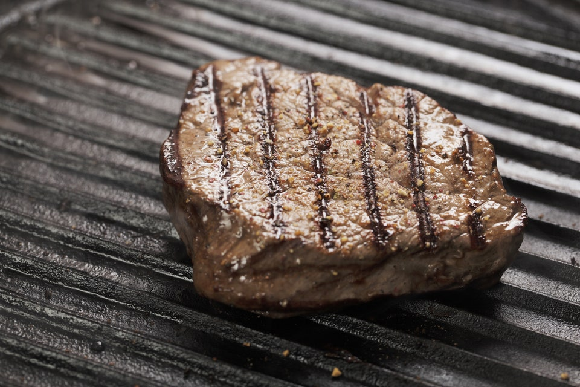

Pancakes

Look at this steak
Ingredients
- Steak
- Butter
- Salt and Pepper
- Pat your steak dry, this helps your steak form a better sear
by removing the surface level moisture
- Rub in some salt and pepper, be generous!
- Get your pan smoking hot
- Add your steak and butter to the pan
- Cook until your steak has hits 52 degrees for a medium rare steak
- Let sit for a few minutes, it helps!
Return